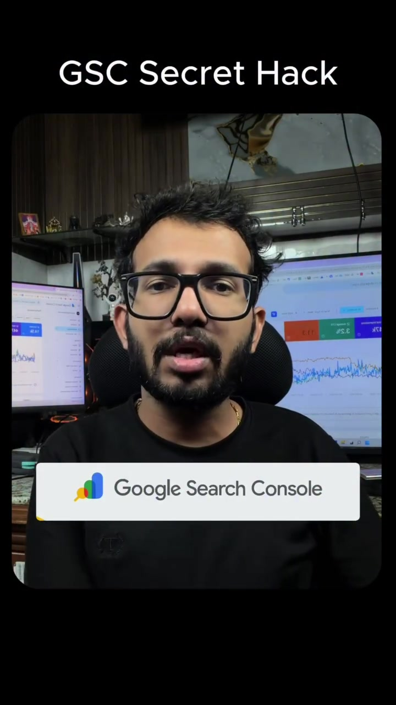
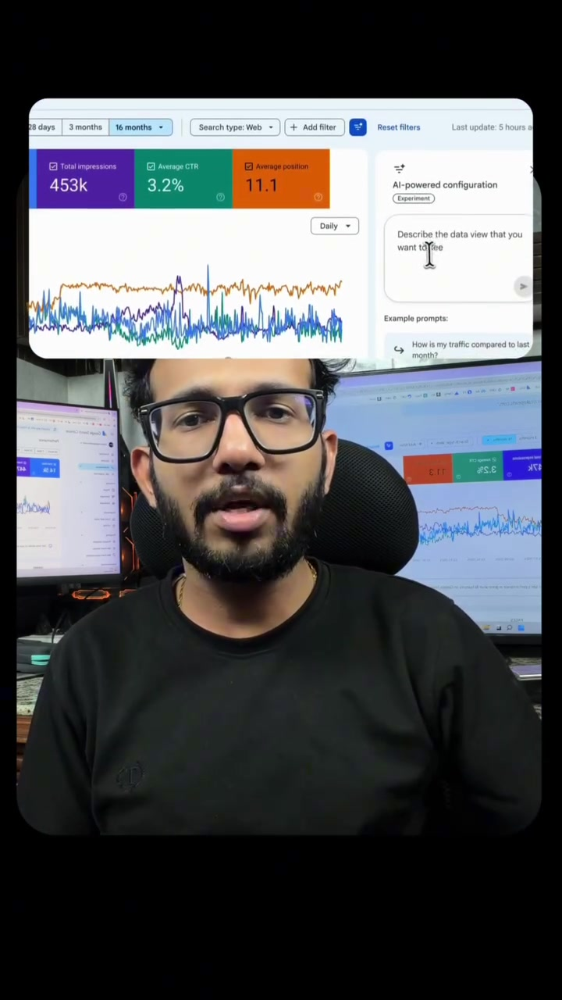
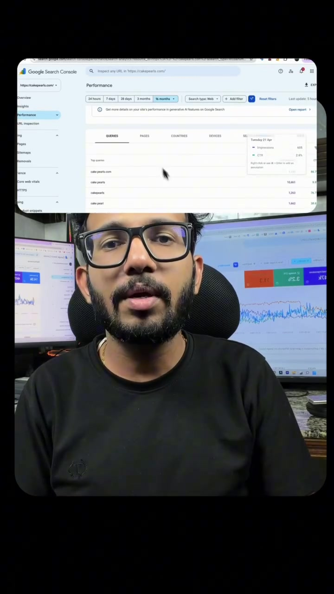

Marketing · SEO
Google Search Console CTR Optimization: Unlocking Hidden Opportunity Keywords
Over 90% of webmasters glance at Google Search Console merely to check total impression graphs without mining the underlying search data. The fastest path to doubling organic search traffic without writing new articles from scratch is identifying high-impression, low-CTR keywords ranking between Positions 8 and 20 (page 2). By optimizing title tags, adding structured headers, and matching search intent for these latent terms, pages jump to top-3 ranking positions in days.
Visual Reference Stills



The 3-Step Low-Hanging Fruit Optimization Framework
In GSC → Performance → Search Results:
- Enable all 4 metrics: Clicks, Impressions, Average CTR, Average Position.
- Sort by Impressions descending.
- Filter for Position > 7.0 and CTR < 2.0%.
Google already considers your page relevant for these terms (granting thousands of impressions), but searchers click competing results because your <title> and meta description fail to address their specific intent.
Inject the high-impression query into three critical HTML anchors:
- Page Title: Move the exact intent phrase into the front 40 characters of the
<title>tag. - H2 Section: Add a dedicated H2 answering the specific question or definition directly in the first 2 sentences.
- Structured FAQ Schema: Add JSON-LD schema markup answering the related query to trigger rich snippet expansions in SERP results.